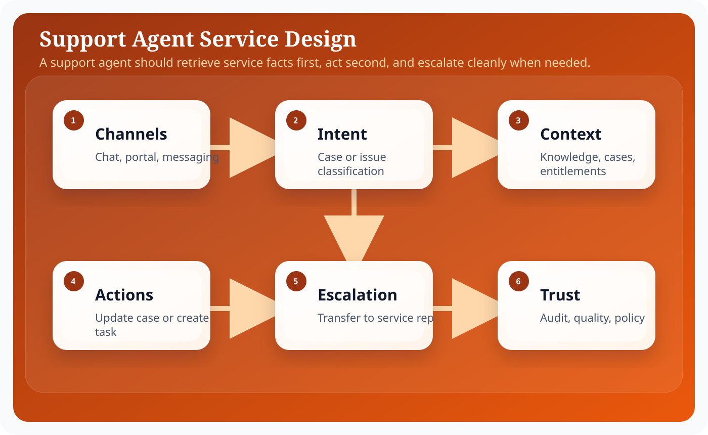
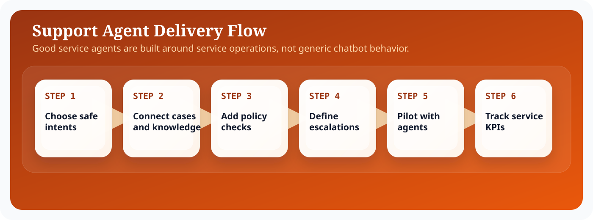

Introduction
Salesforce Agentforce matters because enterprise teams do not need another isolated chatbot; they need an execution surface that can reason over business context, stay inside platform controls, and complete work across Salesforce workflows. In practical terms, that means combining language understanding with CRM records, metadata, automation, and operational policy. The most useful framing is to treat Agentforce as an orchestration layer sitting between human intent and governed business actions.
For architects, admins, and developers, the design question is not whether an LLM can produce fluent output. The harder question is how you bound that output with trusted data, deterministic automations, explicit approvals, and observability. This guide focuses on the implementation tradeoffs, runtime boundaries, and delivery decisions that shape service work in Agentforce. That is why successful Agentforce implementations start from architecture, identity, and process design before they focus on polished conversational experiences.
A strong Service implementation usually follows the same pattern: define the business objective, identify the records and actions the agent can use, design prompts that encode policy and tone, expose actions through Flow or Apex, and then measure outcomes with operational telemetry. This pattern keeps the solution explainable and creates a handoff model that admins, architects, developers, and service leaders can all understand.
Architecture explanation
Support agents require a service architecture rather than a generic assistant architecture. Knowledge retrieval, entitlement checks, case updates, escalation logic, and post-interaction summaries all need to work together as one operational flow.
Support agents are effective when they combine topic selection with service context such as knowledge articles, case history, entitlement data, and escalation rules. Agentforce can treat handoff to a human as just another action, which lets service teams build a controlled transfer path instead of a dead-end failure state.
Building Autonomous Customer Support Agents works best when the architecture separates conversational intent from deterministic execution. Topics and instructions tell the agent what kind of work it is doing. Grounding layers bring in trusted business facts from Salesforce data, knowledge, Data Cloud, or external systems. Actions then convert the plan into platform work through Flow, Apex, or governed API calls. Trust controls wrap the entire path so data access, generated output, and side effects remain observable and policy-bound.

These layers are useful because they help teams decide where a problem belongs. If the answer is wrong, the issue may sit in grounding. If the action is unsafe, the problem sits in permissions or execution validation. If the result is verbose or inconsistent, the issue is often in prompting or output schema. Separating the architecture this way keeps debugging concrete, which is essential when an implementation grows across multiple teams.
In enterprise delivery, it also helps to think about control planes versus data planes. The control plane contains metadata, prompts, access policy, model selection, testing, and release procedures. The data plane contains the live customer conversation, retrieved records, outbound actions, and operational telemetry. This distinction prevents teams from mixing authoring concerns with runtime concerns and makes promotion across sandboxes significantly easier.
The most reliable Agentforce implementations keep the model responsible for reasoning and language, while deterministic platform services remain responsible for data integrity, approvals, and side effects.
Step-by-step configuration
Configuration work succeeds when the team treats Agentforce setup as a sequence of platform decisions rather than a single wizard. The steps below reflect the order that keeps dependencies visible and avoids rework later in the release.

A support agent becomes trustworthy when case data, knowledge, policy, and escalation are configured in a predictable order. The sequence below is designed to keep service quality ahead of automation breadth.
- Identify the support journeys that are safe for automation, such as order lookup, troubleshooting guidance, or case summarization.
- Map knowledge sources, entitlement rules, and customer identifiers required to serve those journeys accurately.
- Design the agent to retrieve facts first, then decide whether it should answer, create a task, update a case, or escalate.
- Connect the agent to service flows so operational work lands in the same systems agents and humans already use.
- Create escalation triggers based on sentiment, confidence, policy keywords, or unresolved troubleshooting loops.
- Run pilot sessions with real service agents reviewing outputs and editing summaries to surface failure modes.
- Expand autonomy only after metrics show strong containment, low rework, and clear auditability.
Support operations need closed-loop learning. Review unresolved interactions, compare containment against customer satisfaction, and let service agents annotate where the AI helped versus where it slowed the process down. Those annotations are often more useful than generic accuracy scores.
Code examples
Enterprise teams need concrete implementation patterns because agent behavior eventually resolves into platform metadata and code. Support implementations need policy-aware prompts and tightly scoped operational updates. The examples below reflect that service-first design.
Case resolution prompt example
Role:
You are a service resolution agent assisting support representatives.
Resolution policy:
- Ground responses in case history, entitlement data, and approved knowledge.
- If confidence is low or the customer requests an exception, escalate.
- Never promise credits, replacements, or SLA changes unless an action confirms eligibility.
Inputs:
- caseSummary
- entitlementSnapshot
- knowledgeMatches
- sentimentSignal
Output:
1. Verified issue summary
2. Recommended next step
3. Escalation reason, if needed
4. Customer-safe response draftCase update action payload
{
"action": "updateCaseStatus",
"inputs": {
"caseId": "{!Case.Id}",
"status": "Waiting on Customer",
"internalComment": "Agentforce recommended troubleshooting step and sent customer-safe summary."
},
"guardrails": {
"allowedStatuses": ["New", "Working", "Waiting on Customer"],
"requiresEscalationForPriority": ["High", "Critical"]
}
}Operating model and delivery guidance
Agentforce projects become easier to sustain when the delivery model is explicit. Administrators typically own prompt authoring, channel setup, and low-code automations. Developers own custom actions, advanced integrations, and test harnesses. Architects own the capability boundary, trust assumptions, and release model. Service or sales operations leaders own business acceptance and the definition of success.
That separation matters because long-term quality depends on ownership. If everyone can tune everything, nobody can explain why behavior changed. If prompts, flows, and actions are versioned with release notes, then a regression can be traced back to a concrete modification. This is the same discipline teams already apply to code; Agentforce just expands the surface area that needs that discipline.
It is also useful to define an evidence loop. Capture representative transcripts, measure action success rate, compare containment against downstream business metrics, and review edge cases at a fixed cadence. Over time, this evidence loop becomes more valuable than intuition. It tells you whether a prompt change improved quality, whether a new action reduced manual effort, and whether an escalation rule is too sensitive or too lax.
Teams should also decide how documentation, enablement, and support ownership work after launch. A static runbook for incident handling, a changelog for prompt revisions, and a named owner for every high-impact action are simple controls that prevent ambiguity when the agent starts operating at scale.
Best practices
- Ground support answers on current knowledge content.
- Escalate early when confidence is low or policy is unclear.
- Log summaries back to the case so humans inherit context.
- Separate troubleshooting guidance from transactional commitments.
- Review containment metrics alongside re-open rates.
Conclusion
Autonomous support is not about replacing agents with a generic bot. It is about creating a service system that can retrieve the right facts, take safe actions, and escalate cleanly when human judgment is needed. Agentforce becomes valuable when it reduces effort without hiding operational truth.
For Salesforce teams, the practical lesson is consistent: start from business flow, ground the model on trusted enterprise context, expose only the actions you can govern, and measure what the agent actually changes in production. That is how Agentforce becomes a durable platform capability instead of a short-lived proof of concept.